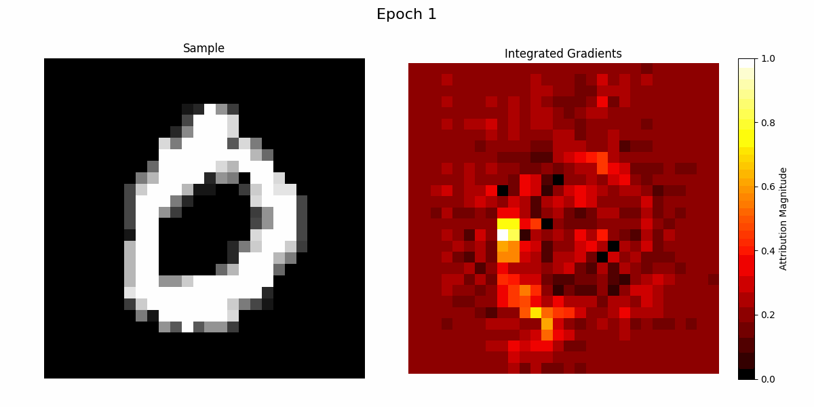
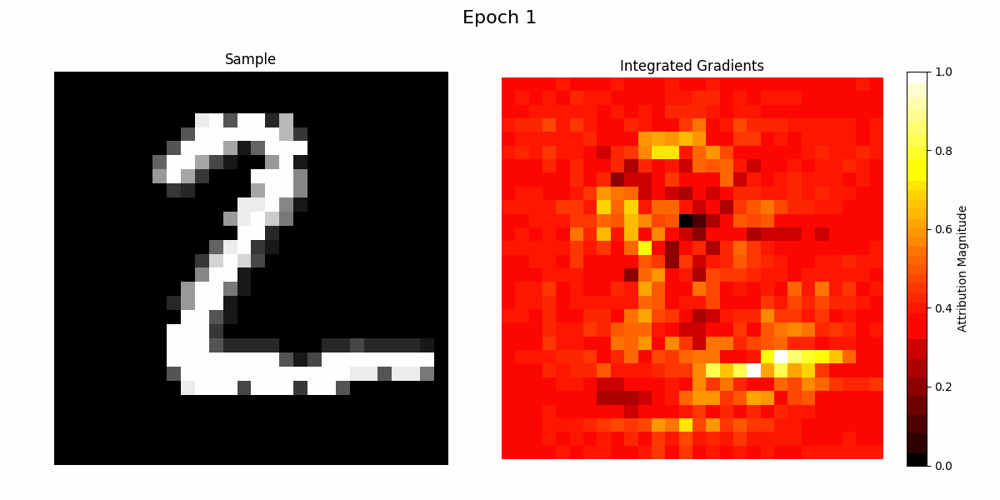
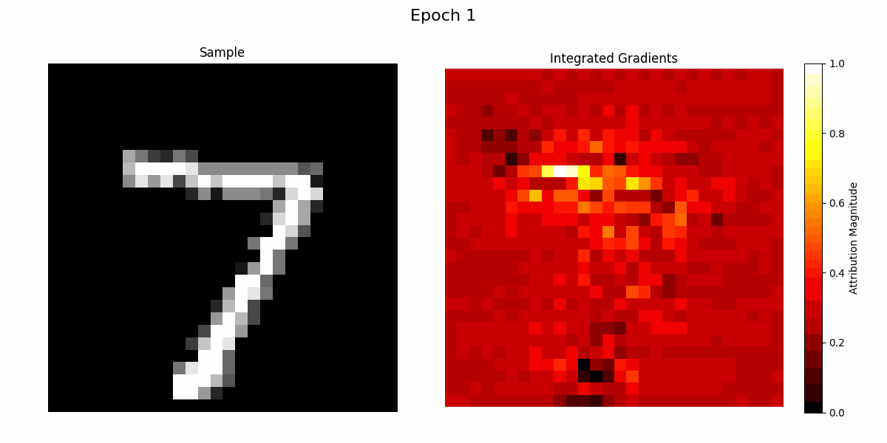

#Overview
TorchKAN trains, validates, and quantises Kolmogorov–Arnold Network variants in PyTorch with CUDA acceleration, evaluated on MNIST for classification and on synthetic functions for regression. Rather than treating KANs as a black box, it pairs each variant with interpretability via Integrated Gradients.
- Learnable activation functions realised with orthogonal polynomial bases instead of fixed non-linearities.
- Post-training quantisation with negligible accuracy loss (~0.6% on the base model).
- Primary explainability through Integrated-Gradients attribution maps.
#Model variants
A family of KAN architectures, each swapping the basis used to model per-edge functions.
KANvolver
Convolutional feature extraction followed by monomial (polynomial) feature expansion for MNIST classification.
KAL-Net Legendre
A generalised additive model using Legendre polynomials with cached recurrences for efficient forward passes.
KAC-Net Chebyshev
Chebyshev-polynomial KAN for stable high-order approximation.
Base KAN spline
The spline-basis KAN in torchkan.py, the reference model for quantisation
experiments.
nKAN regression
Generalised KAN for curve fitting and noisy function approximation (nKAN.py).
#Results on MNIST
Representative accuracies from the experiments in the repository.
Base KAN trained for 8 epochs on an RTX 4090. Numbers reflect the code in this repository and are intended as reproducible baselines, not leaderboard claims.
#Interpretability
Integrated-Gradients attribution over validation samples, showing which pixels drive each prediction as training progresses.



#Install
Requires Python 3.9+ and a PyTorch build matching your CUDA toolkit.
git clone https://github.com/1ssb/torchkan.git
cd torchkan
pip install -r requirements.txtThen run the MNIST pipeline — training, validation, quantisation, and logging:
python mnist.py#Cite
If TorchKAN supports your research or baselines, please cite it.
@misc{torchkan,
author = {Subhransu S. Bhattacharjee},
title = {{TorchKAN}: Simplified {KAN} Model with Variations},
year = {2024},
howpublished = {\url{https://github.com/1ssb/torchkan/}}
}